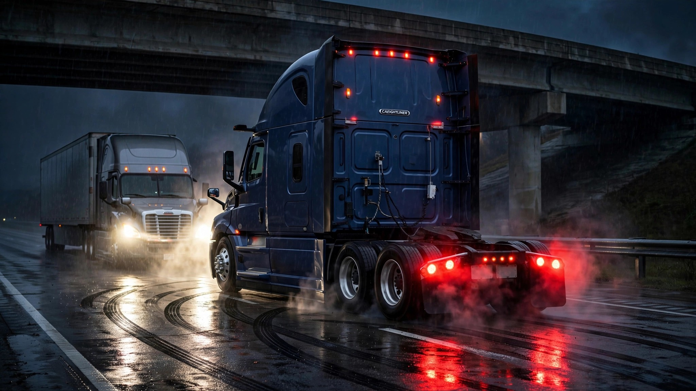

NHTSA Is About to Mandate Truck AEB While Its Own Investigation Links the Technology to a Death

A loaded Freightliner Cascadia weighs 80,000 pounds, and when its automatic emergency braking system decides something is in the road and slams the service brakes at highway speed, there is no gentle deceleration. There is physics. NHTSA's own Office of Defects Investigation has now cataloged 347 reports of false AEB activations in Daimler heavy trucks, linked to 24 crashes, 13 injuries, and one fatality.[1] The investigation, upgraded from a preliminary evaluation to a full Engineering Analysis (EA25006) in October 2025, remains open and unresolved.
Meanwhile, the same agency is restarting the rulemaking process to require AEB on every heavy truck in America. According to the 2026 Unified Regulatory Agenda, NHTSA and FMCSA plan to publish a joint supplemental notice of proposed rulemaking as early as this month, mandating AEB for all vehicles over 10,000 pounds.[2] The original 2023 proposal gave Class 7 and 8 trucks three years to comply, while Class 3 through 6 vehicles had four years on the clock. Even with the restart, the mandate could reach the Federal Register by 2027 or 2028.
The systems under NHTSA's microscope are Detroit Assurance 2.0, 4.0, and 5.0, along with Wabco OnGuard units installed in 2017 through 2022 Freightliner Cascadia and Western Star 5700 trucks. ODI found that all three Detroit Assurance generations fail at similar rates, while the Wabco OnGuard-equipped trucks show a significantly lower claim rate in comparable operating conditions.[1] Which means the problem is not AEB as a concept, but specific implementations shipped in volume, running unsupervised on interstates at 65 miles per hour for years before anyone investigated the crash reports piling up in ODI's inbox.
Daimler reported 315 internal reports of potential false activations to NHTSA. Most events were brief, the manufacturer said, typically resulting in a five-mile-per-hour deceleration. That framing omits what a five-mph speed change means for the tractor-trailer behind you. At highway speeds, five mph of closing rate over a reaction time of 1.5 seconds is 11 feet of gap consumed. When the truck ahead has 40 tons of cargo and no brake lights because the driver never touched the pedal, the following distance evaporates.
The Owner-Operator Independent Drivers Association has opposed the mandate since the original proposal, arguing that NHTSA is "mandating a technology without sufficiently addressing false activations, properly consulting with professional truck drivers, or completing ongoing research programs."[2] Congress directed NHTSA via the Bipartisan Infrastructure Law of 2021 to establish minimum performance standards for commercial vehicle AEB, so the agency has no choice but to act, even if acting before your own engineering analysis concludes looks more like institutional momentum than regulatory diligence.
The math that nobody wants to do
AEB unquestionably prevents more crashes than it causes. IIHS data shows front-to-rear crash reductions of 56% in vehicles equipped with the technology.[3] Large trucks were involved in over 5,700 fatal crashes in the 2024 FARS data, killing 5,936 people, the majority of them occupants of the other vehicle.[4] Even a modest reduction in rear-end truck crashes would save hundreds of lives per year.
But that aggregate math does not resolve the regulatory paradox, because EA25006 is not a theoretical concern. One person is dead because an AEB system activated when it should not have, and twenty-four crashes occurred because a computer decided an overpass, a road sign, or a steel trench plate was a stopped vehicle. NHTSA knows this, documented it in an active engineering analysis, and is pressing forward with the mandate anyway.
The strongest counterargument is that waiting for perfect technology costs more lives than mandating imperfect technology. Every year without a truck AEB mandate is a year of preventable rear-end fatalities. A mandate with stringent false-activation test requirements could actually accelerate improvement by forcing manufacturers to fix their sensor fusion pipelines. NHTSA's revised proposal will reportedly include updated test procedures, including driving over a steel trench plate and between two parked vehicles.[5]
What NHTSA cannot do is both things at once without acknowledging the tension. You cannot investigate whether AEB kills truck drivers in one division and mandate it for every truck in another division and pretend those are separate conversations. EA25006 should inform the SNPRM directly, and the performance standards should explicitly require false-activation rates below the threshold NHTSA's own data reveals. If Detroit Assurance 2.0 through 5.0 fail at similar rates across three generations, the standard should disqualify systems with those failure modes.
The one death in EA25006 is not a rounding error but a person who died because a truck's computer was wrong about what was ahead, and the mandate will prevent far more deaths than the false activations cause. Both of those things are true, and a regulator that cannot hold both truths simultaneously is not regulating but performing.
Sources & References
- NHTSA Office of Defects Investigation, Engineering Analysis EA25006 (upgraded from PE23010), October 23, 2025. Covers 2017–2022 Daimler Trucks North America vehicles. thebrakereport.com
- Landline Media, “AEB rulemaking to resume after FMCSA, NHTSA hit the brakes,” July 2026. landline.media
- IIHS, front-to-rear crash reduction effectiveness of AEB. iihs.org
- NHTSA, Fatality Analysis Reporting System (FARS), 2024 Annual Report File. nhtsa.gov
- NHTSA/FMCSA joint proposed rulemaking (2023), AEB test procedures for heavy vehicles. lexology.com
What you should do
If you drive or manage a fleet of 2017–2022 Freightliner Cascadia or Western Star 5700 trucks, check NHTSA's investigation EA25006 for updates. Report any false AEB activations to NHTSA's complaint database at nhtsa.gov/report-a-safety-problem. If you operate Class 3–8 vehicles without AEB, the upcoming SNPRM will include a public comment period. Use it. The drivers who live with these systems daily have data that sensor engineers in test labs do not.